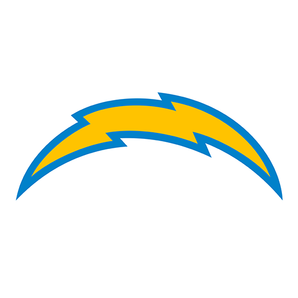
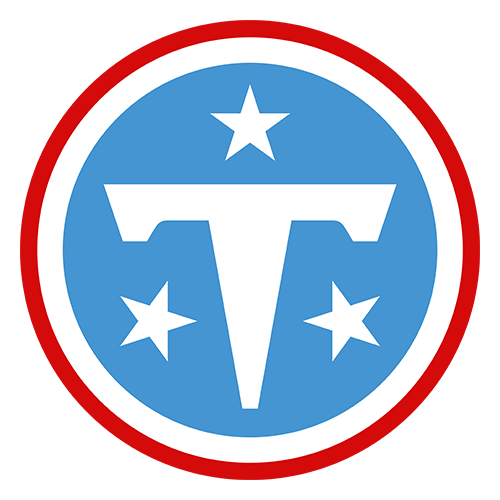
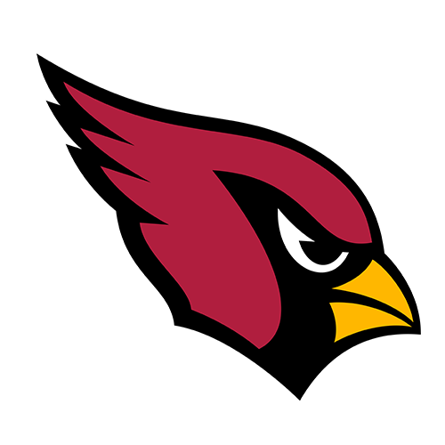
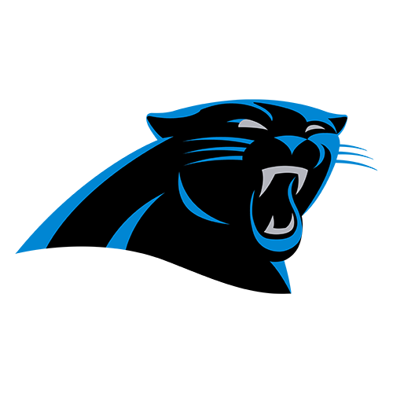
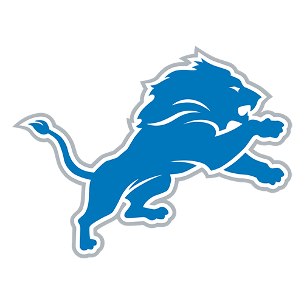

boxscore.data
2027 NFLMock Draft
The full first round, built from the numbers. Every pick is matched to the team's biggest weakness this season. Featured picks show the need and the stat behind the pick. Outlined: No. 1, plus where Arch Manning and LaNorris Sellers land.
1

Chargers 0-8
Jeremiah Smith
WHY HIM1,200 receiving yards, 14 TD · 3rd in FBS in receiving yards
2

Titans 1-7
Colin Simmons
THE NEED7.1 yards allowed per pass play · 5th-worst in NFL
WHY HIM10 sacks + 15.5 tackles for loss · Tied for most sacks in Power 4
3

Dolphins 1-7
Drew Mestemaker
THE NEED6 TD · 6 INT Malik Willis this season · Needs a starter
WHY HIM29 passing TDs, 2,962 yards · Most passing TDs in FBS
4

Jets via Colts2-7
Leonard Moore
5

Eagles 2-7
Dylan Stewart
6
Jets 2-7
Jordan Seaton
THE NEED28 sacks allowed · 4th-most in NFL
WHY HIM6'5" · 307 left tackle, LSU · Jets also pick at #4
7
Commanders 2-5-1
Ellis Robinson IV
8

Buccaneers 3-6
Charlie Becker
THE NEED5.0 yards per pass play · 3rd-worst in NFL
WHY HIM17.5 yards per catch · 875 yds, 9 TD · Big-play threat
9

Cardinals 3-6
Arch Manning
10

Falcons 3-6
CJ Carr
11

Texans 3-5
Jadan Baugh
THE NEED3.3 yards per carry · 5th-worst in NFL
WHY HIM14 rushing TDs · 836 yards · 3rd-most in Power 4
12

Saints 3-5
Will Echoles
13

Panthers 3-5
Chris Cole
14
Jets via Cowboys4-5
Xavier Gilliam
15

Ravens 4-5
Ashton Hampton
16

Raiders 4-5
Greg Johnson
17

Browns 5-4
LaNorris Sellers
18

Seahawks 5-4
Kelley Jones
19
Browns via Rams5-4
Trevor Goosby
20

Patriots 5-4
KJ Bolden
21

Cowboys via Packers6-3
A'Mauri Washington
22
Giants 5-2-1
David Stone
23

Bengals 6-2
Kyngstonn Viliamu-Asa
24
Eagles via Jaguars6-2
Carter Smith
25

Chiefs 6-2
Zereoue Williams
26

Steelers 6-2
Darian Mensah
27

Lions 6-2
Brauntae Johnson
28

Vikings 6-2
Dante Moore
29

Broncos 7-2
Jamari Johnson
30
Titans via Bears7-2
Lance Heard
31

49ers 7-1
Trevor Lauck
32

Bills 7-1
Nick Marsh
How we built it. Draft order is the order if the season ended today: record first, then strength of schedule (through NFL Week 9, Nov 12, 2026). Traded picks ("via") follow reported deals. Team needs come from nflverse play-by-play; player stats are 2026 college season totals from CollegeFootballData. Picks are ours, informed by public big boards.
Follow @boxscore.data for weekly numbers.
Follow @boxscore.data for weekly numbers.